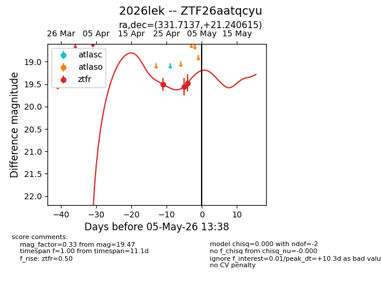
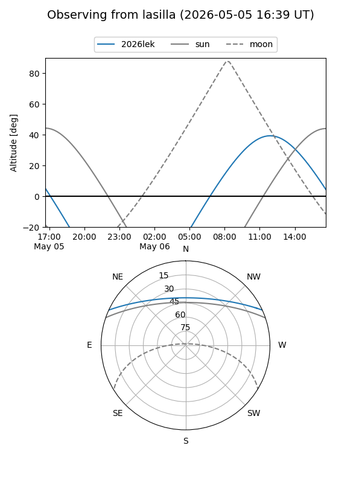
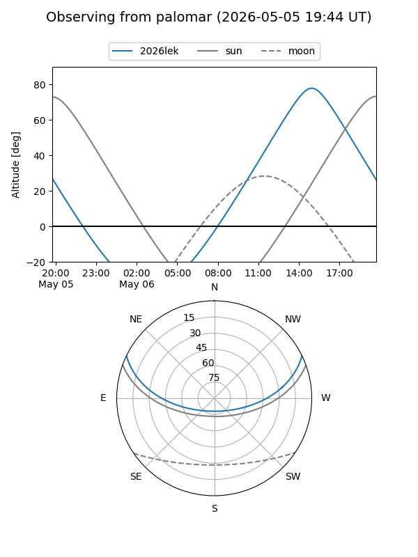
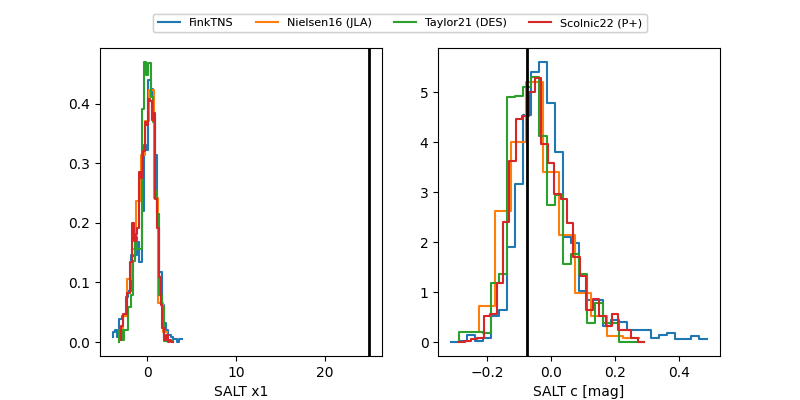

2026lek
Target 2026lek at 2026-05-05 13:39
Aliases and brokers:
FINK: link
Lasair: link
ALeRCE: link
TNS: link
YSE: link
alt names
ZTF26aatqcyu (ztf,fink_ztf)
2026lek (tns,yse)
Coordinates:
equatorial (ra, dec) = 331.7137,+21.24062
equatorial (HMS+DMS) = 22:06:51.28,+21:14:26.22
galactic (l, b) = (79.2638,-27.35291)
Flags:
Photometry:
last ztfr=19.47
3 ztfr detections
Lightcurve

Visibility


Additional plots
